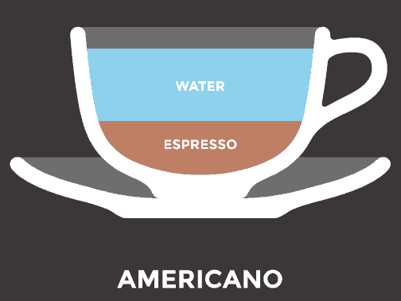

An Americano is everything you love about drip coffee but not burned, bitter, sour, from a rest area, or from the drive-thru of a fast food restaurant. It’s quick, relatively cheap and it’s delicious. It’s almost like what coffee was meant to be.
